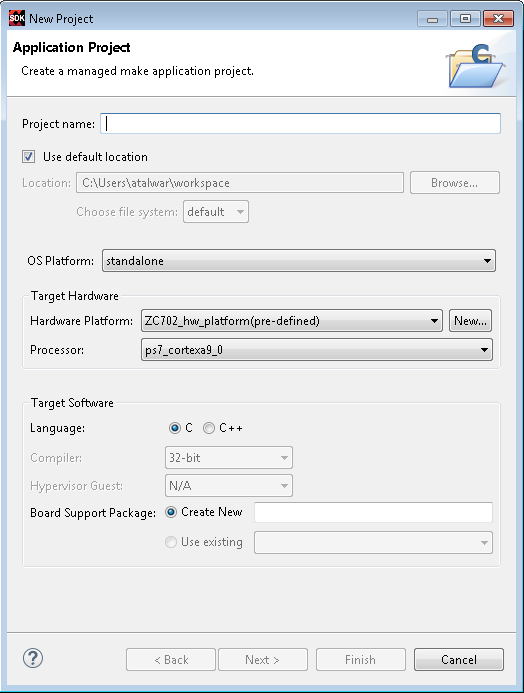

Creating a Standalone Application Project
You can create a C or C++ standalone application project by using the New Application Project wizard.
To create a project:
-
Click File > New > Application Project. The New Application
Project dialog box appears.
Note: This is equivalent to clicking on File > New > Project to open the New Project wizard, selecting Xilinx > Application Project, and clicking Next.

- Type a project name into the Project Name field.
- Select the location for the project. You can use the default location as displayed in the Location field by leaving the Use default location check box selected. Otherwise, click the check box and type or browse to the directory location.
-
The OS Platform allows you to select which operating system you will be
writing code for. Select standalone.
Note: This selection alters what templates you view in the next screen and what supporting code is provided in your project.
-
Select the Hardware Platform XML or HDF file, if it was not specified
earlier.
If you have not build hardware yet, you can select one of the pre-defined platforms from the drop-down. Alternatively, you can drag and drop an existing hardware specification XML/HDF file or search for one by clicking the New button and create a new hardware project. After completing the new hardware project creation, you are returned to the New Application Project dialog box.
- From the Processor drop-down list, select the processor for which you want to build the application. This is an important step when there are multiple processors in your design such as any Zynq® PS.
- Select your preferred language: Cor C++.
- Select the compiler: 64-bit or 32-bit.
- Select a Board Support Package. You can select to create a new customizable BSP for this application, or you can select an existing BSP.
- Click Next to advance to the Templates screen.
- SDK provides useful sample applications listed in Templates dialog box that you can use to create your project. The Description box displays a brief description of the selected sample application. When you use a sample application for your project, SDK creates the required source and header files and linker script.
- Select the desired template. If you want to create a blank project, select the Empty Application. You can then add C files to the project, after the project is created.
-
Click Finish to create your application project and board support
package (if it does not exist).
Note: Xilinx recommends that you use Managed Make flow rather than Standard Make C/C++ unless you are comfortable working with make files.